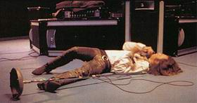

Джим Моррисон • Последний проклятый поэт • поэзия • 06.09.2003
Сборник посвящен жизни и поэтическому творчеству Джима Моррисона, лидера группы The Doors. Он включает переводы поэзии Моррисона и разнообразные материалы, посвященные жизни и творчеству поэта (интервью, которые давал Моррисон и музыканты его группы; литературоведческие статьи; мемуары, в т. ч. Роберта Шекли; библиографические материалы). Большая часть переводов публикуется впервые и снабжена оригинальным текстом (билингва). Книга снабжена иллюстрациями.
Сборник стихов и текстов Моррисона составил Андрей Матвеев. Переводы Дениса Борисова и Юлии Сараевой.
ПРЕССА И КОНТЕКСТ
О добром и вечном (nork.ru, 12.02.2006)
Шикарное, конечно, издание – нечего сказать. Думается, любой престарелый битломан возрадовался бы, если бы его несравненным THE BEATLES посвятили такой нестандартный по формату, переполненный фотографиями сборник в жёстком переплёте. Но не всё же ливерпульцев чествовать, тем более, наберётся не так уж и мало людей, для которых творчество и шаманство Джима Моррисона и THE DOORS представляются гораздо более близкими и тем более интересными. Хотя, “Последнего проклятого поэта” будет приятно изучить и людям, которым просто нравится THE DOORS.
Единственно, когда берёшь в руки эту книгу, нужно проявить небольшую деликатность, а именно – забыть о THE DOORS. И настроиться на поэтический лад. Потому что “Последний проклятый поэт”, как следует из названия, к поэзии имеет отношение гораздо большее, чем к рок-музыке. Во всяком случае, так задумывалось.

Первый из представленных в хронологическом порядке циклов произведений Моррисона – “Владыки”. Когда его читаешь, тебя неотступно преследует ощущение, что это просто-напросто вырванный из записной книжки рабочий материал (отдельные мысли по определённым темам, замечания об увиденном и т. д.) к какому-нибудь сценарию, эссе или рассказу, перемешанный с укурочным и кислотным “бредом”. Многое из прочитанного без контекста совершенно непонятно – и эту бессвязность редко когда можно списать на кислотный трип. В итоге складывается стойкое ощущение, что выносить такое на люди было не очень разумно. Потом (когда начнёшь читать вошедший в сборник критический материал) с удивлением узнаёшь, что это всё же стихи. В прозе.
Впрочем, и без этого объяснения нельзя пройти мимо того факта, что во “Владыках” проскакивают действительно чего-то стоящие мысли. Особого внимания и интереса заслуживают реплики о кино, больше всего впечатляют следующие: “Зрители фильма – молчаливые вампиры” (стр. 53); “Притягательность кино коренится в страхе смерти” (стр. 54); “Неверно полагать, как это делают некоторые, что кино принадлежит женщинам. Кино создаётся мужчинами для утешения мужчин” (стр. 54); “Зритель – это умирающее животное” (стр. 56).
Также оригинальны и порой удивительно точны замечания об алхимии: “Алхимия – эротическая наука, занятая потаёнными аспектами реальности, нацеленная на очищение и трансформацию всего бытия. Это отнюдь не значит, что она забывает о материальных операциях. Мастер осуществляет как мистическую, так и физическую работу” (стр. 58). В итоге, правда, Моррисон посредством не иначе как кислотно-космического мироощущения сближает кино и алхимию: “Кинорежиссура, наследница алхимии, последняя из эротических наук” (стр. 59).
Следующие далее циклы и поэмы являются уже нормальными стихами. “Нормальными” – в смысле наличия рифмы, ритма, певучести и т. д., а не в смысле их содержания. Оценивать их каждый будет по-разному – в соответствии ли со своим поэтическим вкусом, по своему ли знакомству с тем, о чём повествуют стихи, или же из притягательности содержащейся в них нарко- и квазинаркофилософии, и т. д., и т. п. В качестве своеобразного среднего арифметического к подборке возможных оценок заметим, что, читая стихи Моррисона, совершенно не разочаровываешься в легенде – именно такого от Джима Моррисона и ждёшь: непонятного, затягивающего, потустороннего.
Впечатляющих цитат из него можно привести великое множество, поэтому мы ничего приводить не будем. Впрочем, самое злое (точнее, разозлённое) стихотворение Моррисона всё же процитируем, причём полностью. Это “Проклятья и Заклинания” из “Начитки в Виллидже”: “Уродливые выродки с наживками-головами // я жду, когда один из вас, наконец, восстанет // титькастые и тучные тупые педерасты // садовые кабанчики, влагалищ ветераны // изящные липовые святые // дерьмовые вояки и эгоисты // чиновники с наклонностями садомазохистов // вы, неудачники с поджатыми губами // и похотливые торговцы женской плотью // мои воинственные франты // весь странный орден чокнутых чудовищ // жадно лакающих древесный спирт // Мы приглашаем вас на наше Шествие” (стр. 133). У Алины Витухновской есть стихотворение в таком духе (только поубойнее и погрубее) – не знаем, как называется, но первая строчка в нём “Война – это я”.
Следующее после стихов произведение Моррисона в прозе – это киносценарий “Автостопщик”. Сегодня, при таком-то развитии с одновременным изнашиванием “дорожного кино” (а “Hitch-hiker” – классическое road movie, эдакая хорошо просеянная через сито смесь “Попутчика” и, простите, “Бумера”, с несколько запредельным финалом, как если бы Линч вдруг стал романтиком), эта короткометражка выглядела бы банально, но в те времена могла бы быть и крутой вещью.
Далее в сборнике следует раздел интервью. Определённо, беседа с Лизи Джеймс – самая лучшая. В ней личность Моррисона отражена лучше всего, здесь он не выглядит всего лишь рок-музыкантом (как в предыдущих интервью), пускай и нетипичным, пускай и с ворохом ценных идей, но всё же – рок-музыкантом. Здесь он представляется действительно как человек не от мира сего, а в некотором смысле и как пророк. Хотя его самая пророческая фраза содержится всё же в интересном, но неуместно забавном интервью Джону Карпентеру: “Если когда-нибудь случится то, о чём я думаю, – наступит конец” (стр. 189).
Автоинтервью, которое открывает этот раздел, больше напоминает какую-то объяснительную, написанную в состоянии накатывающей усталости. Словно автору не хочется ничего говорить, но по какой-то причине он должен это делать. Зато финал автоинтервью отменен: “Поймите, подлинная поэзия не несёт никакой информации, она просто перебирает различные возможности, одну за другой. Открывает все двери. Ты можешь войти в любую, если она тебя устраивает. Вот почему поэзия так сильно меня притягивает, – потому что в ней содержится вечность. Покуда существуют люди, они будут помнить слова и сочетания слов. Ничто, кроме поэзии и песен, не сможет пережить всемирную катастрофу. Никто не в состоянии запомнить целый роман. Никто не может полностью пересказать фильм, исчерпывающе описать скульптуру или картину, но покуда земля населена людьми, песни и поэзия продолжат жить. Если у моей поэзии и есть какая-то цель – то это освободить людей от ограниченности их восприятия и чувств” (стр. 186).
Монография Уильяма Кука “Серьёзный ли поэт Джим Моррисон?” из последнего раздела книги “Статьи и эссе” настолько детально и обстоятельно разбирает творчество Моррисона, что, право, становится даже как-то неудобно за поверхностность своей оценки стихов Джима. Может, конечно, он и сам не подозревал, что кроется в его стихах (ведь это так типично для поэтов), а, может, подозревал, и ещё как подозревал. Его ранняя смерть – свидетельство в пользу второго, добровольно ли он переступил последнюю черту, или “случайно”. Чёрт разберёт этих проклятых поэтов.
Да, нам всё же непонятно, кто первым назвал Моррисона “последним проклятым поэтом” – составители лишь указывают на это обстоятельство (стр. 284), никого не цитируя и ни на кого не ссылаясь. Мы вовсе не отрицаем право Моррисона на этот действительно почётный титул: его поэма “Праздник в честь ящерицы” – настоящее произведение настоящего проклятого поэта, так же, как и “Тихий парад”. Просто дело в том, что судя даже по содержанию рецензируемой книги, большинство воспринимает Джима Моррисона лишь как певца THE DOORS, оценивая его стихи не как поэзию, но как само собой разумеющуюся писанину автора текстов рок-группы. Моррисон так и остался поэтом лишь для немногих, что уж там говорить о серьёзной оценке его творчества: тот же Уильям Кук – всего лишь маргинал, к тому же из Новой Зеландии, авторов откуда никогда не воспринимали серьёзно ни в Америке, ни в Европе.
Тем не менее мы несколько разовьём отдельные мысли Уильяма Кука, совершив этим свой скромный вклад в дело “проклятия” Моррисона как поэта. В одном месте Кук пишет: “Острая наблюдательность чужака позволяет ему [Моррисону] создавать убедительные образы странных приграничных городков и пейзажей” (стр. 233). Понятие “чужак” в применении к Моррисону несёт не только ту нагрузку, что он был чужим в незнакомых ему местах. Он чужой вообще. А “Чужой” – это, пожалуй, одна из главных черт проклятого поэта. Во “Владыках”, бичуя в абстрактной и наркобредовой манере современный мир, Джим пишет: “«Чужак» воспринимался в древних обществах как величайшая опасность” (стр. 57), – фраза словно откуда-то вырвана и наобум вставлена в общий текст. Моррисон и воспринимался “как величайшая опасность” – только в современном обществе: затаскали ведь парня по судам.
Далее, в одном из своих стихотворений, причём ни в каком-нибудь, а в “Парижском дневнике”, Моррисон, как бы невзначай, бросает такую фразу: “Мой брат Океан” (стр. 163). Это, так сказать, вывод со сдержанными эмоциями из девятой строфы первой песни “Песен Мальдорора” Лотреамона. “Привет тебе, о древний Океан!” на новый лад. Как и Дюкасс, Моррисон приехал из-за океана в Париж, чтобы умереть здесь.
Ещё Кук почему-то не акцентирует внимание – или недостаточно акцентирует – на алхимии, которой воздаются почести во “Владыках”. Моррисон пишет об алхимии не как случайно заинтересовавшийся книгочей, но как человек, уловивший в ней нечто близкое себе по духу, нечто родное.
Да, мы согласны с тем, что Моррисон – проклятый поэт. И то обстоятельство, что для многих он по-прежнему является лишь рок-музыкантом – ещё одно подтверждение этому.
Теперь о переводе. Если честно, переводные стихи в том виде, в котором они представлены в сборнике, лично нами воспринимаются с недоверием. Кто такой Джим Моррисон – мы знаем, а кто эти переводчики – не знаем. Так почему мы должны верить их переводу? Почему читателям не оставляют возможности для исследований, что именно хотел сказать Моррисон? Разумнее на наш взгляд было бы поступить так, как сделали РИПОЛ-КЛАССИК, когда в 1998 издали проклятых поэтов (Бодлера одним томом, а Верлена, Рембо и Малларме – вторым), не только приведя переводы французов известными отечественными поэтами, но и сопроводив их другими, малоизвестными версиями. Или как СИМПОЗИУМ, в том же году издавшие стихи По – параллельно с оригиналом. Плюс по несколько версий перевода каждого произведения. Кто спорит, в случае Моррисона несколько версий к каждому стихотворению наскрести не удалось бы, но оригинал-то можно было бы привести.
В итоге же то, что получилось с Моррисоном, удручающе походит на сборник текстов песен какой-нибудь культовой рок-группы, выставленный в витрине рок-магазина. Хорошо, с рок-магазином мы переборщили, но на собрание произведений проклятого поэта это действительно мало похоже. Что-то из разряда “и нашим, и вашим”.
Вообще, именно в таком духе и выдержана вторая половина названия сборника (“последнего проклятого поэта” мы уже обсудили): когда Моррисон получил первые экземпляры своей книги “«Владыки» и «Новые твари»”, он был “расстроен тем, что вместо «Джеймс Дуглас Моррисон»на обложке [было] написано просто «Джим Моррисон»” (стр. 27). Его понять можно: Джим Моррисон – это просто рок-музыкант, тогда как Джеймс Дуглас Моррисон – это поэт. На обложке же издания УЛЬТРА.КУЛЬТУРЫ значится: Джим Дуглас Моррисон.
Создатели сборника словно усомнились, что народ примет проклятого поэта Джима Дугласа Моррисона, и, начиная с обложки, постоянно напоминают читателям, что это “тот самый Джим из THE DOORS”. А могли бы сразу кардинально разделить проклятого поэта и простого рок-музыканта. Ведь Моррисон, хоть и значил для группы очень и очень много, но всё же не абсолютно всё, – в этой связи Роберт Шекли (который открыл сборник, думается, потому что он Роберт Шекли, а не потому что его эссе-письмо действительно глубоко и всё расставляет по своим местам) высказал одну весьма здравую мысль: “Эта песня [«Light My Fire»] не была бы такой запоминающейся, если бы не длинная клавишная интерлюдия Рэя Манзерика [Рэя Манзарека]” (стр. 16).
Заявление составителей о виде книги немного обескураживает: “Прекрасно понимая, что сделать действительно полный и академически комментированный свод всех стихов Джима Моррисона пока малореально…” (стр. 284), – почему же “малореально”? Надо было поработать, и всё. И что может быть более “академичным” в приложении к творчеству Моррисона, чем представленная в сборнике работа Уильяма Кука? “Влияние Рембо на Моррисона” Элизабеты Росино, хотя эта статья и несколько поверхностна, тоже отвечает поставленной цели. Такого “академизма” вполне достаточно, если уж испытывать в нём потребность.
Впрочем, чего можно ожидать от составителей, с упоением цитирующих в своём предисловии эпизод из “Армагеддона” Стивена Кинга, в котором появляется воскресший Джим Моррисон. Рассказанная гламурным бестселлеристом байка из американского предания подтолкнула их к неожиданному выводу: “…Стивен Кинг ничего не делает просто так, если он вставляет что-то в свои романы, то значит – это вполне может быть. Недаром Кинга именуют не просто автором крутых триллеров и ужастиков, но автором, который сам неоднократно общался с той стороной тьмы” (стр. 10). Если провинциально-рокерская доверчивость авторов, породившая благоговейный трепет перед Кингом, умиляет, то их восторги от процитированного эпизода озадачивают: у американцев принято встречать умерших знаменитостей на бензоколонках, и Моррисон – один из самых популярных персонажей в этом виде устного народного творчества. Ничего в этом плохого нет – какая нация, такой и фольклор, но странно, что Андрей Матвеев и Денис Борисов не знали об этом. На будущее, друзья: если понятие “проклятый поэт” для вас не только литературное клише, а действительно что-то значит, то книжку обласканного и облизанного всеми СМИ Стивена Кинга следует засунуть куда подальше. /Ник Фоменков/
P. S. Пара замечаний о временных пересечениях. В интервью Ховарду Смиту (ноябрь 1970) Моррисон обсуждает фильм “Беспечный ездок” (стр. 202, 207). Этот сразу же ставший культовым фильм (снят в 1969), называемый сегодня не иначе, как символом поколения шестидесятых, тогда был у всех на устах – в “Телемечтателях” (о деятельности RAF) мы находим коротенькое упоминание о том, что в ноябре 1969 Астрид Пролл (сестра Торвальда Пролла, соратника Баадера) “отправляется в Амстердам, чтобы купить фальшивые документы и посмотреть «Беспечный ездок»” (стр. 19). А “Страх и отвращение в Лас-Вегасе”? Уже недалеко от финала адвокат Гонзо, созерцая скопище провинциальных полицейских высших чинов, выглядящих как “банда пьяных фермеров свиноводов”, восклицает: “Я видел этих подонков в «Беспечном ездоке», но не верил, что они существуют на самом деле” (стр. 237). Мелочь, конечно, но как знаменательно – одно время, одна культура, одни события, – но одни пишут музыку, а другие стреляют и взрывают. Третьи просто балдеют.
Также из представленного в сборнике материала нельзя понять, как именно Моррисон отнёсся к акции Мэнсона, – Уильям Кук, указавший на отголоски громких убийств в его творчестве (стр. 240), тоже не прояснил дело. Однако, судя по тому, что в сентябре 1969 (т. е. вскоре после убийств) Моррисон начал переписываться с практикующей колдуньей, а по совместительству редактором и критиком журнала “Jazz & Pop”, которая в итоге стала его любовницей, а также потому, что из под пера Моррисона вышел упомянутый выше “Автостопщик”, можно заключить, что что-то вроде понимания он проявил. По крайней мере точно не страх и отвращение.
http://www.nork.ru/creation/reviews06.html#128
👽